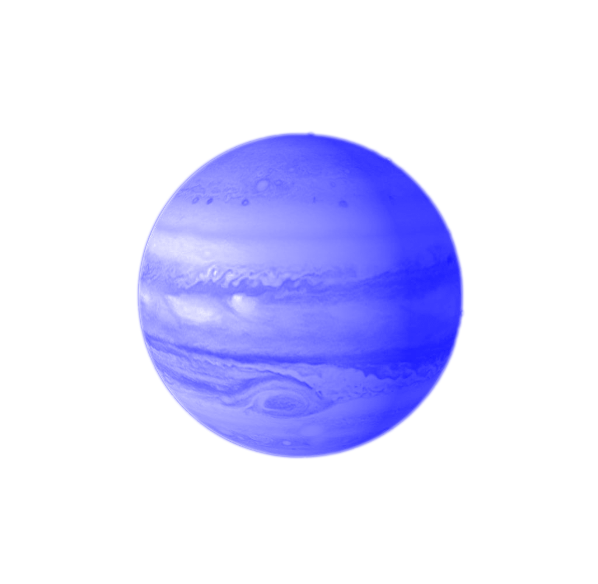
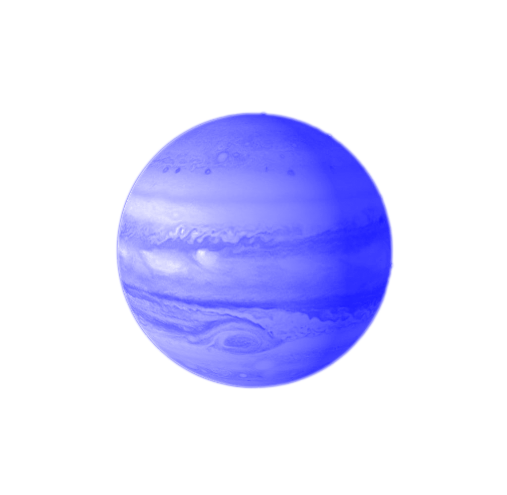

Sira Trinkler
My Background
In 2019 I did the Foundation Course in Art and Design at HSLU.
In 2020 I had the privilege to start studying Graphic Design and now I'm already in the second year of my bachelor.
I'm in this course because I want to improve my coding skills and because I'm very interested in
Digital Design. I
really like working with design-programs like Figma and Adobe XD and
hope I will be able to
fully design and program my
own website after this IDA-Course.
 



My Interests
- Drawing
- Photography
- Soccer
- Drawing
- Photography
- Soccer